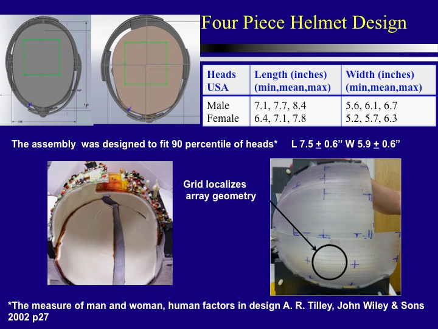
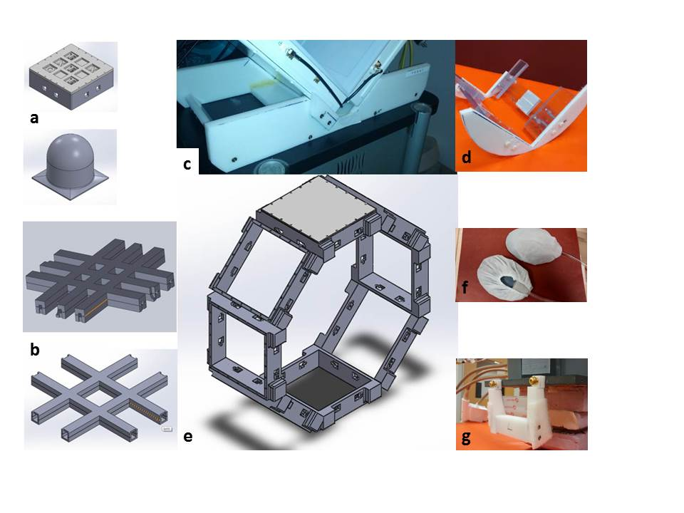

Bioengineering - Interests in health sciences and engineering
Neuroscience training as part of the Center for Neural Basis of Cognition (CNBC): core coursework in cellular, systems, computational and cognitive neuroscience. In my third year I competed and won an NIH multi-modal neuroimaging fellowship for the year 2012-2013.
Radio Frequency (RF) LAB (2010-2016)
| Project | Summary |
|---|---|
| Abstract 7T Multi-slab Whole-Head Homogenous and Low SAR T2 Acquisitions, ISMRM Toronto, Canada, p 3760, May 2015, | We used the 20Ch Tx and 32Ch Rx Coil developed at the RF Group at University of Pittsburgh to obtain generic (non-patient specific) RF excitation shim. We present results that achieve uniform whole brain excitation through multiple 2D slabs. The multi-slab imaging approach is optimized for SAR and achieves whole brain coverage, it is used to acquire 7T Turbo Spin Echo (TSE) and Fluid Attenuated Inversion Recovery (FLAIR) images in multiple studies |
| Abstract Segmentation of Small Veins Using 3D isotropic SW images at 7T, ISMRM Milan Italy, May 10, 2014 | We used the 20Ch Tx and 32Ch Rx Coil developed at the RF Group at University of Pittsburgh to obtain 2D and 3D Susceptibility images at 7T. Segmentation of venous vasculature tree was done using semi-automated region growing implemented in MIPAV. Voxels within a vessel were identified and thresholding was done interactively, and restricted regionally, to track vessels across slices. Demonstration of tracking vessels across slices using 3D isotropic images is possible and more realistic than 2D images with higher inplane resolution. Neighbourhood based segmentation algorithms would produce realistic segmentation using isotropic images when compared to non isotropic 2D acquisition which could be biased in high resolution dimension |
| Poster Susceptibility Weighted and Echo-Planar Imaging at 7T using RF Shimming, Pittsburgh Imaging Community Retreat - Bench to Bedside MRI - University of Pittsburgh, Biomedical Science Tower, October 21st, 2013 | Validation of 20Ch Tx and 32Ch Rx Coil for reliable SWI and EPI bold acquisition. Invariant Tx coil tuning across 4 volunteers shown and match of Tx fields of 20 ports of Tx coil with those obtained from experiments on a phantom also shown |
| Journal Krishnamurthy, Narayanan, Tiejun Zhao, and Tamer S. Ibrahim. "Effects of receive-only inserts on specific absorption rate, B1+ field, and Tx coil performance." Journal of Magnetic Resonance Imaging published online: 1 AUG 2013. DOI: 10.1002/jmri.24152. | Abstract: To evaluate the effect of different cylindrical and close-conforming receive-only array designs on spin excitation and specific absorption rate (SAR) of a 7T transmit-only head coil. Materials and Methods: We developed finite difference time domain (FDTD) models of different receive-only array geometries. Cylindrical and close-fitting helmet arrays with varying copper trace widths, a TEM Tx coil model, and two head models were used in numerical simulations. Tx coil coupling was experimentally measured and validated with FDTD modeling. Results: Changing copper trace width of loops in array models caused subtle changes in radio frequency (RF) absorption (<5%). Changes in SAR distribution were observed in the head models with Rx-only inserts. Peak SAR increased (-.1 to +15%) in different tissues for a mean B1+ in the brain of 2 mT. Total absorption in the head models for 1W forward power increased (5% to 21%) in the heads with Rx-only inserts. Changes in RF absorption with different Rx inserts indicate a change in RF radiation of the Tx coil even when changes in B and coupling between ports of Tx coil were minimal. Conclusion: Changes in local/global SAR and subtle changes in B1+ field distributions were observed in the presence of Rx-only inserts. Thus, incorporation of the receive-only array effects are needed when evaluating SAR and designing RF transmit pulse waveform parameters for shimming and/or Tx-SENSE for 7T MRI. |
|
 |
 Solid Works & other prototypes I've built at RF Lab a) Tx/Rx former for breast imaging, b) Cross-pole antenna former, c & d) Stands for Tx coil, e) Octagon body coil former, f) Low profile non-MR headset and g) Preamp box MR table fixture |
Neuroscience Lab Rotation (2007-2009)
| Project | Summary |
|---|---|
| Poster WiiMoCap: a low-cost motion capture system using the Nintendo Wiimote, SFN San Diego 2009 | We created an inexpensive laboratory motion tracking system using a Nintendo Wiimote, a USB Bluetooth adapter, open-source software and LabVIEW (National Instruments, Inc. Austin Texas) |
| Computational Neuroscience Project Chris Ayers and Narayanan Krishnamurthy | Phase plane analysis implementation in Matlab to reproduce the results of the work "A recurrent network mechanism of time integration in perceptual decisions KF Wong, XJ Wang - The Journal of neuroscience, 2006 - Soc Neuroscience" |
| Ethics Case Study Narayanan Krishnamurthy and Siddharth Jhunjhunwala | Engineering Ethics:A Case study of affordability of intelligent systems and therapies: we looked at prosthetics, smart wheel chairs, and gene therapy technologies, and at how these are made available to people in need |